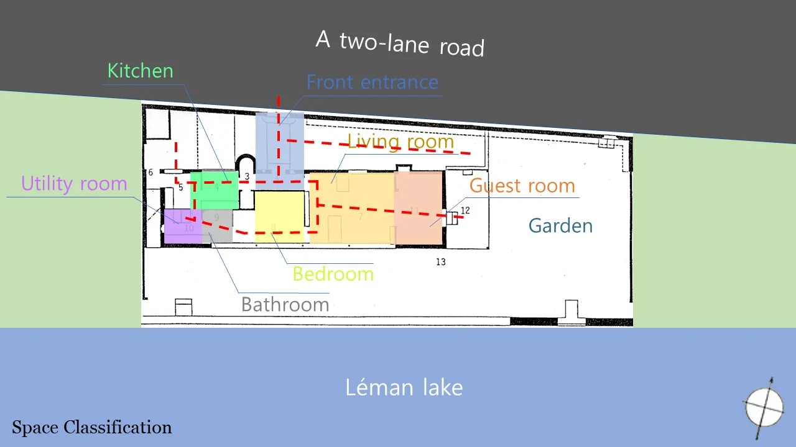

VILLA LE LAC / STUDY
작은 집에 담긴 건축의 원리
Villa Le Lac의 평면과 단면, 창과 풍경의 관계를 분석하며 주택을 읽는 시야를 넓혔습니다.
- YEAR / SEMESTER
- 2학년 1학기 · 2022
- PROJECT TYPE
- 주택 사례 분석
- CONTRIBUTION
- 팀 공동작업 · 개인 스케치 포함
- SITE / SUBJECT
- 르 코르뷔지에의 Villa Le Lac 사례 연구

THE IDEA
생각의 출발점
유명 건축가의 주택을 분석하는 과제로 Villa Le Lac을 조사했습니다. 작은 주택 안에서 공간을 나누는 방식과 길게 이어지는 창, 실내외의 관계를 살피고 발표와 스케치로 정리했습니다.
- 01
주택 분석
근대건축의 원리와 주택의 공간 구성을 연결해 살폈습니다.
- 02
도면 해석
평면과 단면에 공간과 동선을 표시해 건축을 읽었습니다.
- 03
공간 관찰
창과 정원, 실내 공간의 관계를 발표 자료와 스케치에 담았습니다.
PROCESS & OUTCOME
과정과 결과
사진을 누르면 크게 볼 수 있습니다.